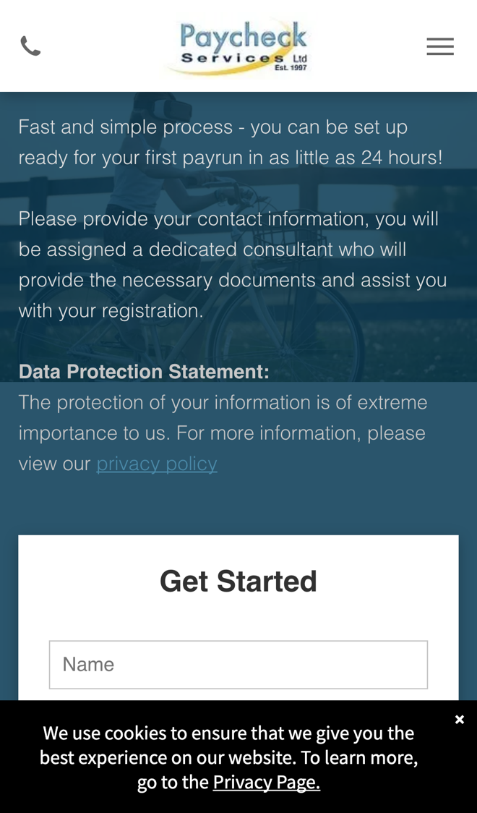

Paycheck Services: from quote to first payrun, faster
I went through your website on a phone, the way a contractor thinking of switching umbrella company would, and read your homepage, PAYE and CIS pages, the Register page and your contact page. Your prices are out in the open, and so is what's included. Where I think you'd save your consultants time, and sign up more contractors, is what happens after someone fills in a form.
What's already working
Three things I'd change
Work out the take-home figure straight away
Your menu has a "Take Home Pay Calculator" link, which opens a request form asking for date of birth, tax code, "Quote Type", "Pay Frequency", "How many Days/Hrs?" and "What is your rate?". It says "Our umbrella company quote is tailored specifically for your individual requirements", so the contractor waits for the figure to come back.
A contractor comparing umbrella companies often asks more than one. Whoever sends a clear take-home figure first has the head start.
- The form they already fill in works out the take-home figure from their own rate, hours and tax code, using your margins.
- Your consultant gets it ready-made to check and send in one click, so it stays tailored and nothing goes out unchecked.
- Out of hours, the contractor gets a reply straight away saying when their figure will arrive.
Send registration documents the moment they ask
Your Register page says "you will be assigned a dedicated consultant who will provide the necessary documents and assist you with your registration", and that you can be "set up ready for your first payrun in as little as 24 hours".

Each new contractor means sending documents, chasing them back and checking ID. Doing that online saves your consultants time on every sign-up, and gets people paid sooner.
- When they send the Get Started form, the right pack for PAYE or CIS goes out straight away as a link.
- They sign online and upload their ID and bank details from their phone.
- Your consultant gets one complete file to check, with a reminder sent for anything still missing.
Follow up quotes that go quiet
Your take-home pay request is on the homepage, and registration is a separate form on the Register page. Once a contractor has their figure, the next step is up to them: find the Register page and fill in their details again.
Someone who asked for a figure is already halfway to switching. A friendly nudge a few days later often brings them back before they settle elsewhere.
- Every take-home pay figure you send is saved with the contractor's details and the date.
- If they haven't registered a few days later, they get a short, friendly message with a link straight to the Register page.
- Your consultants see a list of open quotes, so they know who to ring first.
Your website, answering for you
An assistant that answers the questions you get asked again and again, at any hour. These answers come only from your own website: your PAYE, CIS and Register pages.
Anything it can't answer, it passes to you with the customer's details.
What happens next
For five local businesses I'm setting up one of these for free, in return for an honest review. Pick whichever would help most.
I'm Tom Williams and I run Tomoni-AI. If a 20-minute chat would help, reply to my email or give me a ring.
Call 07971 512158Email Tom